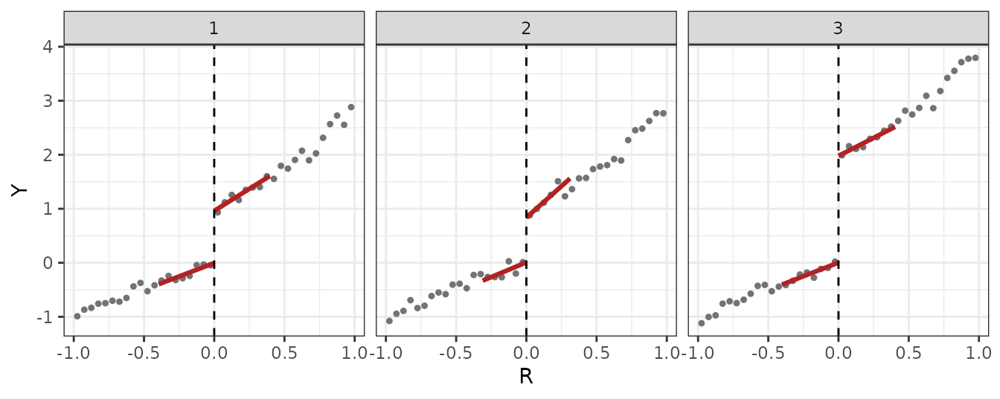
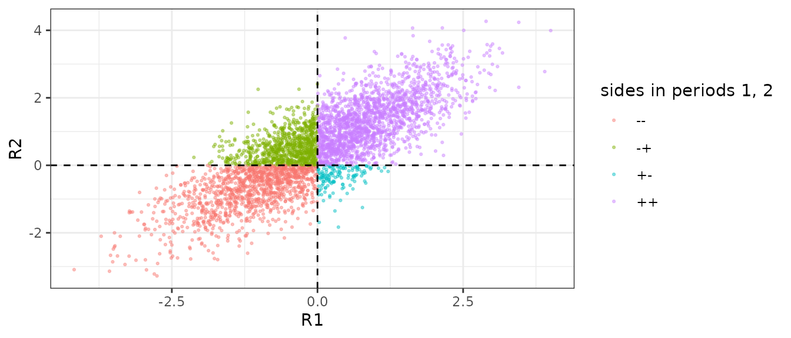
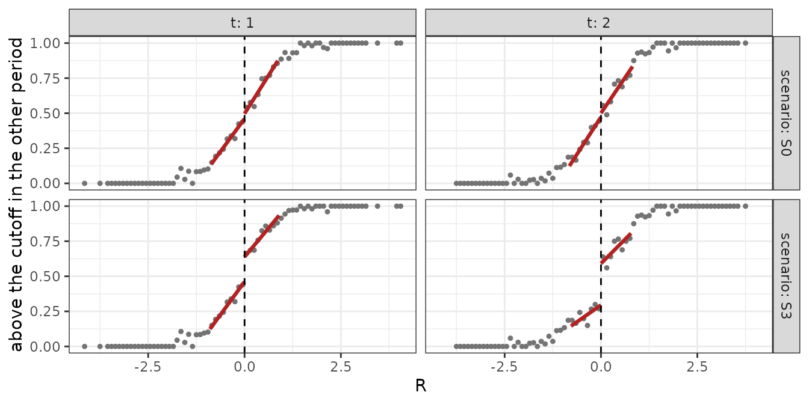
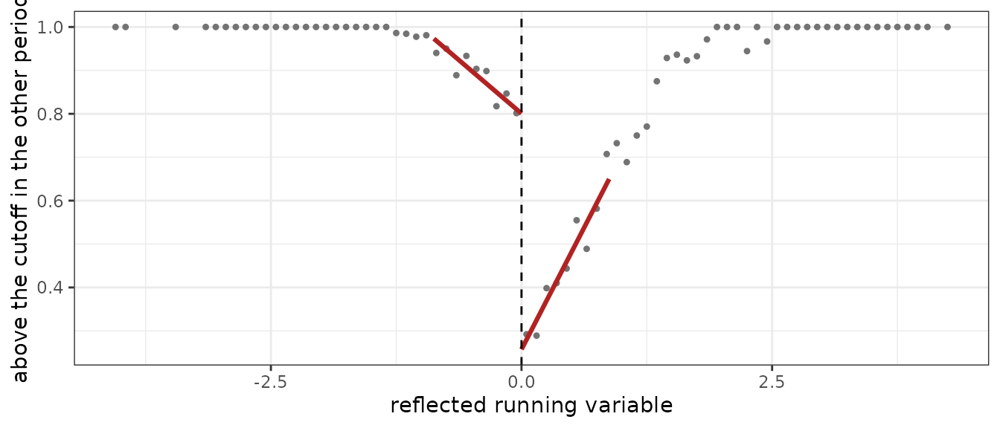
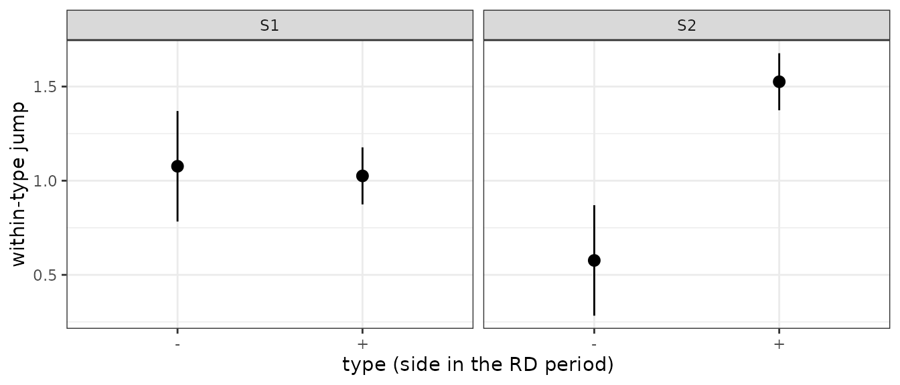
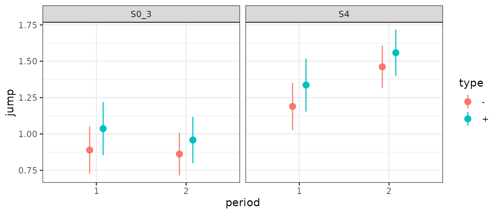

This article is for readers who want to see the pieces: referees, or
users checking the package against their own code. It rebuilds the
RD-DID estimate and two of the validation tests by hand from the two
building blocks, rd_bw_cct() (one period’s CCT bandwidths)
and rd_period() (one period’s local-linear RD), and checks
that the package returns the same numbers. It then runs the four tests
on simulated designs in which one assumption fails at a time. All data
are simulated inline, with the truth known. For everyday use, start with
Get started.
library(rddid)
has_gg <- requireNamespace("ggplot2", quietly = TRUE)
if (has_gg) library(ggplot2)
fmt <- function(x, d = 2) formatC(x, format = "f", digits = d)Part 1: the estimate
A simulated design
A treatment of interest W and a confounding policy
V switch at the same cutoff of a running variable
R. In the comparison periods W is zero for
everybody, so the jump in the outcome at the cutoff in period
,
,
is the confounding jump; in the RD period it is the confounding jump
plus the ATT. With comparison-period weights
,
the estimate is
where
is the RD period and the sum runs over the comparison periods. Below,
periods 1 and 2 are comparison periods, period 3 is the RD period, and
the confounding jump is 1 in every period.
m_a <- function(r, theta) r + (theta / 2) * r^2 * (r >= 0)
dgp_a <- function(n = 2000, conf = c(1, 1, 1), theta = c(2, 2, 2), tau = 1, seed = 1) {
set.seed(seed)
R <- runif(n, -1, 1) # running variable fixed over time, cutoff at 0
u <- rnorm(n, 0, 0.5) # unit effect
do.call(rbind, lapply(1:3, function(t) {
V <- as.integer(R >= 0) # confounding policy: switches at the cutoff every period
W <- V * (t == 3) # treatment of interest: switches in the RD period only
data.frame(id = seq_len(n), t = t, R = R,
Y = m_a(R, theta[t]) + conf[t] * V + tau * W + u + rnorm(n, 0, 0.5))
}))
}
conf_true <- c(1, 1, 1) # confounding jump by period
tau_true <- 1 # ATT in the RD period
dat <- dgp_a(conf = conf_true, tau = tau_true)
head(dat)
#> id t R Y
#> 1 1 1 -0.4689827 0.4680573
#> 2 2 1 -0.2557522 0.4935181
#> 3 3 1 0.1457067 1.3797469
#> 4 4 1 0.8164156 2.1865366
#> 5 5 1 -0.5966361 -1.3632511
#> 6 6 1 0.7967794 2.0669378Per-period jumps
Each
is a standard local-linear RD, estimated one period at a time with
rd_bw_cct() (the period’s CCT bandwidth pair: main
bandwidth
and pilot bandwidth
)
and rd_period() (the local-linear fit with the bias
correction and robust variance of Calonico, Cattaneo and Titiunik,
2014). At a given bandwidth pair, rd_period() reproduces
the conventional and bias-corrected estimates and the conventional and
robust standard errors of rdrobust (with
vce = "hc1") to machine precision.
periods <- 1:3
per_period <- lapply(periods, function(t) {
d <- dat[dat$t == t, ]
bw <- rd_bw_cct(d$Y, d$R, c = 0)
fit <- rd_period(d$Y, d$R, h = unname(bw["h"]), b = unname(bw["b"]), id = d$id, c = 0)
list(d = d, fit = fit)
})
names(per_period) <- periods
truth <- conf_true + tau_true * (periods == 3)
tab <- data.frame(
t = periods,
D = sapply(per_period, function(p) p$fit$D),
SE = sapply(per_period, function(p) sqrt(p$fit$V_D)),
D_bc = sapply(per_period, function(p) p$fit$D_bc),
SE_bc = sapply(per_period, function(p) sqrt(p$fit$V_D_bc)),
h = sapply(per_period, function(p) unname(p$fit$h)),
n = sapply(per_period, function(p) p$fit$n),
truth = truth
)
knitr::kable(tab, digits = 3,
col.names = c("t", "D", "SE", "D (bc)", "SE (bc)", "h", "n", "truth"))| t | D | SE | D (bc) | SE (bc) | h | n | truth |
|---|---|---|---|---|---|---|---|
| 1 | 0.966 | 0.103 | 0.957 | 0.121 | 0.395 | 2000 | 1 |
| 2 | 0.827 | 0.129 | 0.794 | 0.152 | 0.311 | 2000 | 1 |
| 3 | 1.975 | 0.117 | 1.985 | 0.141 | 0.403 | 2000 | 2 |
bin_w <- 0.05
binned <- do.call(rbind, lapply(periods, function(t) {
d <- per_period[[as.character(t)]]$d
bin <- (floor(d$R / bin_w) + 0.5) * bin_w
agg <- aggregate(d$Y, by = list(R = bin), FUN = mean)
names(agg)[2] <- "Y"
agg$t <- t
agg
}))
fit_lines <- do.call(rbind, lapply(periods, function(t) {
f <- per_period[[as.character(t)]]$fit
h <- unname(f$h)
rbind(
data.frame(t = t, side = "-", R = c(-h, 0),
Y = f$sides[["-"]]$beta0 + f$sides[["-"]]$slope * (c(-h, 0) - 0)),
data.frame(t = t, side = "+", R = c(0, h),
Y = f$sides[["+"]]$beta0 + f$sides[["+"]]$slope * (c(0, h) - 0))
)
}))
ggplot(binned, aes(R, Y)) +
geom_point(size = 0.9, colour = "grey45") +
geom_line(data = fit_lines, aes(group = side), colour = "firebrick", linewidth = 1.1) +
geom_vline(xintercept = 0, linetype = "dashed") +
facet_wrap(~ t, nrow = 1) +
theme_bw()
The comparison-period jumps, and , estimate the confounding jump; the RD-period one, , estimates the confounding jump plus the ATT.
The aggregation
Averaging the two comparison-period jumps,
,
and subtracting the average from
gives 1.08. rddid() does the same aggregation. With
bwselect = "cct" it fits each period at its own
rd_bw_cct() bandwidths, as the loop above did (the default
rule, bwselect = "joint", would use one common bandwidth
instead):
res <- rddid(dat, y = "Y", x = "R", time = "t", id = "id", t_rd = 3, bwselect = "cct")
res
#> RD-DID estimate of the ATT in period 3
#> Comparison periods: 1, 2 (constant confounding trend; weights 0.5, 0.5)
#> Sampling scheme: panel, no unit changes side of the cutoff (detected)
#> Bandwidth: per-period CCT MSE-optimal (rule "cct"): h (period = value) 1 = 0.3952, 2 = 0.3109, 3 = 0.403
#>
#> Estimate Std. err. z p-value 95% CI
#> Conventional 1.0788 0.0888 12.15 <0.001 [0.9047, 1.2528]
#> Robust (bias-corrected) 1.1097 0.1064 10.43 <0.001 [0.9012, 1.3182]
#>
#> summary() shows the per-period fits and the s.e. under every sampling scheme.The Conventional row is
computed from the D column of the table above, and the
Robust (bias-corrected) row is the same difference of the
D (bc) column; both agree with the hand computation to
machine precision. A hand computation of the standard error that treats
the three periods as independent,
from the SE column, reproduces the repeated cross-section
standard error (res$estimates["Conventional", "se_cs"]).
The printed standard error, 0.089, is smaller: the same units enter
every period (the scheme is “panel, running variable fixed over time”),
and rddid() adds the cross-period covariances of the jumps.
summary(res) prints the robust standard error under all
three sampling schemes.
A confounding jump that moves linearly
conf_lin <- 0.5 + 0.5 * (1:3)
dat_lin <- dgp_a(conf = conf_lin, tau = tau_true)
res_const <- rddid(dat_lin, y = "Y", x = "R", time = "t", id = "id", t_rd = 3,
trend = "constant", bwselect = "cct")
res_const$estimates[, c("est", "se")]
#> est se
#> Conventional 1.828770 0.08880653
#> Robust 1.859708 0.10639326
bias_truth <- conf_lin[3] - mean(conf_lin[1:2])Here the confounding jump grows linearly over the periods (1, 1.5, 2). Equal weights net out only the average of the comparison-period confounding jumps, leaving a bias equal to the year-3 confounding jump minus that average, 2 - (1 + 1.5)/2 = 0.75, against an effect of 1: the conventional estimate, 1.83, sits near 1.75.
With trend = "linear", rddid() extrapolates
the line through the comparison-period jumps to the RD period:
res_lin <- rddid(dat_lin, y = "Y", x = "R", time = "t", id = "id", t_rd = 3,
trend = "linear", bwselect = "cct")
res_lin$weights
#> 1 2
#> -1 2
res_lin$estimates[, c("est", "se")]
#> est se
#> Conventional 1.287077 0.1940728
#> Robust 1.354870 0.2283461The weights are -1 and 2: the line through and reaches 1.69 at , which subtracted from leaves 1.29 (standard error 0.19), against an effect of 1.
A numeric vector supplies the weights directly, one per comparison period. Under a constant confounding jump any weights that sum to one are valid; on the first data set:
Comparison periods where everybody is treated: the ATU
When the treatment of interest W is one for everybody in
the comparison periods, rather than zero, the same difference of jumps
identifies the ATU, the effect for the units just below the cutoff. In
the paper’s treatment of this case, the ATU design is the ATT design
with the two sides of the cutoff exchanged. The estimate, its standard
errors and its bandwidths are the same as for an ATT call, so
estimand = "atu" only labels the output; among the four
validation tests, only rd_compstable() computes differently
(see the ATU section in Part 2). To show that the estimate is the ATU
and not the effect above the cutoff, the effect of W below
the cutoff (where V = 0) differs here from its effect above
the cutoff (where V = 1):
dgp_atu <- function(n = 2000, conf = c(1, 1, 1), theta = c(2, 2, 2),
tau0 = 1, tau1 = 2, seed = 1) {
set.seed(seed)
R <- runif(n, -1, 1) # running variable fixed over time, cutoff at 0
u <- rnorm(n, 0, 0.5) # unit effect
do.call(rbind, lapply(1:3, function(t) {
V <- as.integer(R >= 0) # confounding policy: switches at the cutoff every period
W <- if (t == 3) V else 1 # treatment of interest: everybody treated in comparison periods
data.frame(id = seq_len(n), t = t, R = R,
Y = m_a(R, theta[t]) + conf[t] * V +
tau0 * W * (1 - V) + tau1 * W * V + u + rnorm(n, 0, 0.5))
}))
}
tau0 <- 1 # the ATU: effect of W below the cutoff, where V = 0
tau1 <- 2 # effect of W above the cutoff, where V = 1 -- not identified by this design
dat_atu <- dgp_atu(tau0 = tau0, tau1 = tau1)
head(dat_atu)
#> id t R Y
#> 1 1 1 -0.4689827 1.4680573
#> 2 2 1 -0.2557522 1.4935181
#> 3 3 1 0.1457067 3.3797469
#> 4 4 1 0.8164156 4.1865366
#> 5 5 1 -0.5966361 -0.3632511
#> 6 6 1 0.7967794 4.0669378W is one for everybody in the comparison periods and
equal to V in the RD period, so a comparison-period jump is
now the confounding jump among treated units: the confounding jump of 1
plus tau1 - tau0.
res_atu <- rddid(dat_atu, y = "Y", x = "R", time = "t", id = "id", t_rd = 3,
estimand = "atu")
res_atu
#> RD-DID estimate of the ATU in period 3
#> Comparison periods: 1, 2 (constant confounding trend; weights 0.5, 0.5)
#> Sampling scheme: panel, no unit changes side of the cutoff (detected)
#> Bandwidth: common h = 0.3025 (rule "joint": one bandwidth, chosen for the RD-DID estimate)
#> Pilot bandwidth b (period = value): 1 = 0.452, 2 = 0.4691, 3 = 0.4415
#>
#> Estimate Std. err. z p-value 95% CI
#> Conventional 1.0874 0.1008 10.79 <0.001 [0.8899, 1.2850]
#> Robust (bias-corrected) 1.1152 0.1213 9.19 <0.001 [0.8774, 1.3530]
#>
#> summary() shows the per-period fits and the s.e. under every sampling scheme.
tau0
#> [1] 1The estimate is 1.09 (standard error 0.10), against the true ATU
tau0 = 1.
Part 2: the tests
A simulated design with a moving running variable
The four tests apply when the running variable
moves over time within a unit (a panel whose running variable varies
over time); when it is fixed, every unit is on the same side of the
cutoff in every period and the objects below are degenerate. When
moves, a unit can sit on different sides of the cutoff in different
periods. Its type in period
is its side of the cutoff in the other period(s). Write
and
for the shares of type
just above and just below the cutoff in period
.
The paper’s treatment of a time-varying running variable states four
assumptions on these shares and on the confounding jump within each
type, and a test for each. Every test function takes the same long data
frame (id, t, R, Y)
that rddid() takes.
m_b <- function(r) r + r^2 * (r >= 0)
dgp_b <- function(n = 4000, d = 0, conf = c(1, 1), kappa = 0, sort_p = 0, sort_w = 0.5,
tau = 1, periods = 2, gamma = 0, seed = 1) {
set.seed(seed)
eta <- rnorm(n) # latent level of the running variable
R <- sapply(seq_len(periods), function(t) eta + d * (t - 1) + rnorm(n, 0, 0.5))
if (sort_p > 0) { # sorting: some units just below the RD-period
V1 <- R[, 1] >= 0; r2 <- R[, periods] # cutoff that were above in period 1 move above
mover <- r2 > -sort_w & r2 < 0 & V1 & runif(n) < sort_p
R[mover, periods] <- -R[mover, periods]
}
V <- R >= 0
do.call(rbind, lapply(seq_len(periods), function(t) {
other <- if (periods == 2) V[, 3 - t] else V[, periods] # the unit's type: side in the other period
a <- conf[other + 1] + gamma * t # confounding jump within the type
data.frame(id = seq_len(n), t = t, R = R[, t],
Y = m_b(R[, t]) + a * V[, t] + tau * V[, t] * (t == periods) + kappa * eta + rnorm(n, 0, 0.5))
}))
}-
d: a common drift of between periods; breaks composition stability. -
conf: the confounding jump by type,c(below in the other period, above in the other period); unequal values break homogeneous confounding. -
kappa,sort_p: sorting of period-1-above units across the period-2 cutoff, withkappamaking the outcome level depend on the type; breaks type continuity. -
gamma: a trend in the confounding jump across periods (three-period version); breaks constant within-type confounding.
S0 <- dgp_b() # every assumption holds
S1 <- dgp_b(d = 0.5) # composition changes; confounding homogeneous
S2 <- dgp_b(d = 0.5, conf = c(0.5, 1.5)) # composition changes; confounding heterogeneous
S3 <- dgp_b(kappa = 2, sort_p = 0.5) # sorting at the RD-period cutoff
S0_3 <- dgp_b(periods = 3) # three periods, everything holds
S4 <- dgp_b(periods = 3, gamma = 0.3) # confounding jump trends across periods
w1 <- reshape(S1[, c("id", "t", "R")], idvar = "id", timevar = "t", direction = "wide")
names(w1) <- c("id", "R1", "R2")
w1$pattern <- with(w1, paste0(ifelse(R1 >= 0, "+", "-"), ifelse(R2 >= 0, "+", "-")))
ggplot(w1, aes(R1, R2, colour = pattern)) +
geom_point(size = 0.5, alpha = 0.4) +
geom_hline(yintercept = 0, linetype = "dashed") + geom_vline(xintercept = 0, linetype = "dashed") +
labs(colour = "sides in periods 1, 2") + theme_bw()
With drift (d = 0.5), units just above the period-2
cutoff were mostly below the cutoff in period 1.
Type continuity by hand
Type continuity requires
in every period: the share of each type jumps by zero at the cutoff. The
test regresses, in each period
,
the indicator of the unit’s side in the other period
,
,
on
:
the local-linear RD jump of that indicator is
.
The two per-period jumps, built directly with rd_bw_cct()
and rd_period():
side_share <- function(dat) {
w <- reshape(dat[, c("id", "t", "R")], idvar = "id", timevar = "t", direction = "wide")
names(w) <- c("id", "R1", "R2")
V <- w[, c("R1", "R2")] >= 0
lapply(1:2, function(t) {
other <- V[, 3 - t]
d <- data.frame(id = w$id, R = w[[paste0("R", t)]], ind = as.integer(other))
bw <- rd_bw_cct(d$ind, d$R, c = 0)
fit <- rd_period(d$ind, d$R, h = unname(bw["h"]), b = unname(bw["b"]), id = d$id, c = 0)
list(d = d, fit = fit)
})
}
ss0 <- side_share(S0); ss3 <- side_share(S3)
tab_ss <- data.frame(
scenario = rep(c("S0", "S3"), each = 2), t = rep(1:2, 2),
jump = c(sapply(ss0, function(s) s$fit$D), sapply(ss3, function(s) s$fit$D)),
se = c(sapply(ss0, function(s) sqrt(s$fit$V_D)), sapply(ss3, function(s) sqrt(s$fit$V_D)))
)
knitr::kable(tab_ss, digits = 3, col.names = c("scenario", "t", "jump", "SE"))| scenario | t | jump | SE |
|---|---|---|---|
| S0 | 1 | 0.036 | 0.045 |
| S0 | 2 | 0.028 | 0.046 |
| S3 | 1 | 0.177 | 0.042 |
| S3 | 2 | 0.296 | 0.045 |
rd_typecont() computes the same jumps and combines them
into a joint Wald statistic across periods, with the cross-period
covariance of the two jumps (the same units enter both regressions)
inside it. The statistic, its degrees of freedom and p-value are
$statistic, $df, $p_value; the
per-period versions sit in $per_period[[t]]$ll_wald:
tc0 <- rd_typecont(S0, x = "R", time = "t", id = "id", bwselect = "cct", bc = FALSE)
tc3 <- rd_typecont(S3, x = "R", time = "t", id = "id", bwselect = "cct", bc = FALSE)
tc0_bc <- rd_typecont(S0, x = "R", time = "t", id = "id", bwselect = "cct", bc = TRUE)Each per-period statistic equals the squared jump over its variance
from the table above, to machine precision. For S0,
,
(per period
and
);
with bc = TRUE the Wald uses the bias-corrected jumps and
their robust variance,
.
For S3,
,
(per period
and
).
S0’s per-period jumps are indistinguishable from zero in either period;
S3’s are not, in either period.
type_share_df <- function(ss, scenario) {
do.call(rbind, lapply(1:2, function(t) {
fit <- ss[[t]]$fit; d <- ss[[t]]$d
agg <- aggregate(d$ind, by = list(R = bin_x(d$R)), FUN = mean)
names(agg)[2] <- "ind"; agg$scenario <- scenario; agg$t <- t
h <- unname(fit$h)
lines <- rbind(
data.frame(R = c(-h, 0), ind = fit$sides[["-"]]$beta0 + fit$sides[["-"]]$slope * (c(-h, 0) - 0), side = "-"),
data.frame(R = c(0, h), ind = fit$sides[["+"]]$beta0 + fit$sides[["+"]]$slope * (c(0, h) - 0), side = "+")
)
lines$scenario <- scenario; lines$t <- t
list(binned = agg, lines = lines)
}))
}
b0 <- type_share_df(ss0, "S0"); b3 <- type_share_df(ss3, "S3")
binned <- rbind(do.call(rbind, b0[, "binned"]), do.call(rbind, b3[, "binned"]))
lines <- rbind(do.call(rbind, b0[, "lines"]), do.call(rbind, b3[, "lines"]))
ggplot(binned, aes(R, ind)) +
geom_point(size = 0.9, colour = "grey45") +
geom_line(data = lines, aes(group = side), colour = "firebrick", linewidth = 1.1) +
geom_vline(xintercept = 0, linetype = "dashed") +
facet_grid(scenario ~ t, labeller = label_both) + labs(y = "above the cutoff in the other period") + theme_bw()
Composition stability by hand
Composition stability requires , with a comparison period: the share of each type among the units just above the cutoff is the same in the RD period and in the comparison period. The test reflects the comparison-period above-cutoff units onto a negative axis and stacks them with the RD-period above-cutoff units. For S1 (RD period 2, comparison period 1):
w1 <- reshape(S1[, c("id", "t", "R")], idvar = "id", timevar = "t", direction = "wide")
names(w1) <- c("id", "R1", "R2")
above1 <- w1$R1 >= 0; above2 <- w1$R2 >= 0
refl <- rbind(
data.frame(id = w1$id[above1], x = -(w1$R1[above1]), ind = as.integer(above2[above1])),
data.frame(id = w1$id[above2], x = w1$R2[above2], ind = as.integer(above1[above2]))
)
bw_r <- rd_bw_cct(refl$ind, refl$x, c = 0)
fit_r <- rd_period(refl$ind, refl$x, h = unname(bw_r["h"]), b = unname(bw_r["b"]), id = refl$id, c = 0)
agg_r <- aggregate(refl$ind, by = list(x = bin_x(refl$x)), FUN = mean)
names(agg_r)[2] <- "ind"
h_r <- unname(fit_r$h)
lines_r <- rbind(
data.frame(x = c(-h_r, 0), ind = fit_r$sides[["-"]]$beta0 + fit_r$sides[["-"]]$slope * (c(-h_r, 0) - 0), side = "-"),
data.frame(x = c(0, h_r), ind = fit_r$sides[["+"]]$beta0 + fit_r$sides[["+"]]$slope * (c(0, h_r) - 0), side = "+")
)
ggplot(agg_r, aes(x, ind)) +
geom_point(size = 0.9, colour = "grey45") + geom_line(data = lines_r, aes(group = side), colour = "firebrick", linewidth = 1.1) +
geom_vline(xintercept = 0, linetype = "dashed") +
labs(x = "reflected running variable", y = "above the cutoff in the other period") + theme_bw()
The jump at
estimates
.
rd_compstable() runs the same construction and reports the
jump, its standard error and the Wald test:
cs0 <- rd_compstable(S0, x = "R", time = "t", id = "id", t_rd = 2, comparisons = 1, bwselect = "cct", bc = FALSE)
cs1 <- rd_compstable(S1, x = "R", time = "t", id = "id", t_rd = 2, comparisons = 1, bwselect = "cct", bc = FALSE)
p1 <- cs1$pairs[["2::1"]]; p0 <- cs0$pairs[["2::1"]]For S1: jump
,
equal to the hand-built
;
standard error
;
,
,
with 2680 above-cutoff units from the RD period, 1985 from the
comparison period, and 1848 above the cutoff in both. Those 1848 units
appear on both sides of the reflected cutoff. The hand-built
rd_period() fit treats the two sides as independent
(standard error
);
the package standard error adds the id-matched covariance between the
two sides. For S0, for contrast: jump
,
.
ATU designs: estimand = “atu”
With comparison periods in which everybody is treated, the ATU
requires composition stability of the below-cutoff shares,
.
rd_compstable(estimand = "atu") mirrors the running
variable and runs the same construction on the below-cutoff units, with
the same type indicator (above the cutoff in the other period).
cs1_atu <- rd_compstable(S1, x = "R", time = "t", id = "id", t_rd = 2, comparisons = 1,
bwselect = "cct", bc = FALSE, estimand = "atu")
p1_atu <- cs1_atu$pairs[["2::1"]]For S1, the "att" call above gives jump
,
,
,
on 2680 above-cutoff units from the RD period and 1985 from the
comparison period; the "atu" call gives jump
,
,
,
on 1320 below-cutoff units from the RD period and 2015 from the
comparison period, different units from the "att" call.
Both reject under S1’s drift.
The other three tests are unchanged under
estimand = "atu":
tc_att <- rd_typecont(S1, x = "R", time = "t", id = "id", bwselect = "cct", bc = FALSE)
tc_atu <- rd_typecont(S1, x = "R", time = "t", id = "id", bwselect = "cct", bc = FALSE,
estimand = "atu")rd_typecont() on S1 gives the same joint statistic
either way,
under "att" and 0.299 under "atu".
Homogeneous confounding
Homogeneous confounding requires that, in the comparison period, the
confounding jump is the same for every type. The test estimates the
outcome jump within each type (the unit’s side of the cutoff in the RD
period, type_by = "rd_side", the default) in the comparison
period, and tests equality:
h1 <- rd_homog(S1, y = "Y", x = "R", time = "t", id = "id", t_rd = 2, comparisons = 1, bwselect = "cct", bc = FALSE)
h2 <- rd_homog(S2, y = "Y", x = "R", time = "t", id = "id", t_rd = 2, comparisons = 1, bwselect = "cct", bc = FALSE)
tab_h <- rbind(cbind(scenario = "S1", h1$period_type_jumps), cbind(scenario = "S2", h2$period_type_jumps))
knitr::kable(tab_h[, c("scenario", "period", "type", "jump", "se", "n")], digits = 3, row.names = FALSE)| scenario | period | type | jump | se | n |
|---|---|---|---|---|---|
| S1 | 1 | - | 1.077 | 0.150 | 1320 |
| S1 | 1 | + | 1.026 | 0.077 | 2680 |
| S2 | 1 | - | 0.577 | 0.150 | 1320 |
| S2 | 1 | + | 1.526 | 0.077 | 2680 |
S1:
,
.
S2:
,
.
In S1 the two within-type comparison-period jumps,
and
,
are close to each other (both near the confounding jump of 1); in S2
they are
and
,
close to the construction values conf = c(0.5, 1.5).
tab_h$scenario <- factor(tab_h$scenario, levels = c("S1", "S2"))
ggplot(tab_h, aes(type, jump)) +
geom_pointrange(aes(ymin = jump - 1.96 * se, ymax = jump + 1.96 * se)) +
facet_wrap(~ scenario) + labs(x = "type (side in the RD period)", y = "within-type jump") + theme_bw()
Constant within-type confounding
Constant within-type confounding requires, for each type, the same confounding jump in the RD period as in the comparison period. It cannot be tested in the RD period, where the confounding jump is not seen apart from the effect; with two comparison periods (, RD period ) the test instead checks whether the within-type jumps are constant across the two comparison periods, a pre-trends check in the difference-in-differences sense:
tr0 <- rd_trendcell(S0_3, y = "Y", x = "R", time = "t", id = "id", t_rd = 3, comparisons = c(1, 2), bwselect = "cct", trend = "constant", bc = FALSE)
tr4 <- rd_trendcell(S4, y = "Y", x = "R", time = "t", id = "id", t_rd = 3, comparisons = c(1, 2), bwselect = "cct", trend = "constant", bc = FALSE)
tab_tr <- rbind(cbind(scenario = "S0_3", tr0$cell_period_jumps), cbind(scenario = "S4", tr4$cell_period_jumps))
knitr::kable(tab_tr[, c("scenario", "cell", "period", "jump", "se", "n")], digits = 3, row.names = FALSE)| scenario | cell | period | jump | se | n |
|---|---|---|---|---|---|
| S0_3 | + | 1 | 1.037 | 0.093 | 1953 |
| S0_3 | + | 2 | 0.959 | 0.081 | 1953 |
| S0_3 | - | 1 | 0.889 | 0.083 | 2047 |
| S0_3 | - | 2 | 0.862 | 0.075 | 2047 |
| S4 | + | 1 | 1.337 | 0.093 | 1953 |
| S4 | + | 2 | 1.559 | 0.081 | 1953 |
| S4 | - | 1 | 1.189 | 0.083 | 2047 |
| S4 | - | 2 | 1.462 | 0.075 | 2047 |
S0_3:
,
.
S4:
,
.
In S4 each type’s jump rises from
to
:
type “+” from
to
,
type “-” from
to
,
by about the construction increment gamma = 0.3. With only
two comparison periods the constant form is what can be tested here;
trend = "linear" needs three or more.
tab_tr$scenario <- factor(tab_tr$scenario, levels = c("S0_3", "S4"))
ggplot(tab_tr, aes(period, jump, colour = cell)) +
geom_pointrange(aes(ymin = jump - 1.96 * se, ymax = jump + 1.96 * se), position = position_dodge(width = 0.3)) +
facet_wrap(~ scenario) + labs(colour = "type") + theme_bw()
What each test detects
The p-values of the tests and the rddid() estimate in
each scenario, first the two-period designs S0 to S3, then the
three-period designs S0_3 and S4:
| scenario | type continuity p | composition stability p | homogeneous confounding p | rddid() est (SE) | truth |
|---|---|---|---|---|---|
| S0 | 0.659 | 0.946 | 0.948 | 0.840 (0.081) | 1 |
| S1 | 0.861 | < 0.001 | 0.762 | 0.909 (0.081) | 1 |
| S2 | 0.861 | < 0.001 | < 0.001 | 0.369 (0.087) | 1 |
| S3 | < 0.001 | 0.290 | 0.983 | 1.304 (0.152) | 1 |
| scenario | constant within-type confounding p | rddid() est (SE), constant | rddid() est (SE), linear | truth |
|---|---|---|---|---|
| S0_3 | 0.800 | 1.113 (0.071) | 1.147 (0.134) | 1 |
| S4 | 0.011 | 1.563 (0.071) | 1.147 (0.134) | 1 |
Distances from the truth below are in standard errors of this one sample. In S0 all four assumptions hold, so the estimate targets the truth; here it is 0.840 (0.081), 2.0 standard errors from the truth of 1. In S1 composition stability is rejected () while homogeneous confounding is not (), and the estimate, 0.909 (0.081), is 1.1 standard errors from the truth: identification needs only one of composition stability and homogeneous confounding. In S2 both are rejected ( and ), and the estimate, 0.369 (0.087), is 7.2 standard errors from the truth; the gap is the bias from the difference in type composition. In S3 type continuity is rejected (); the sorting biases the estimate, 1.304 (0.152), but in this one sample it is 2.0 standard errors from the truth, about as far as S0’s, so the estimate alone does not reveal the problem and the test does. In the three-period design, S4’s test of constant within-type confounding rejects (): the constant-trend estimate, 1.563 (0.071), is 8.0 standard errors from the truth, the linear-trend estimate, 1.147 (0.134), 1.1.
References
Leventer, D. and D. Nevo (2024). Correcting Invalid Regression Discontinuity Designs Using Multiple Time-Period Data. arXiv:2408.05847. https://arxiv.org/abs/2408.05847
Calonico, S., M. D. Cattaneo and R. Titiunik (2014). Robust nonparametric confidence intervals for regression-discontinuity designs. Econometrica 82(6), 2295–2326.